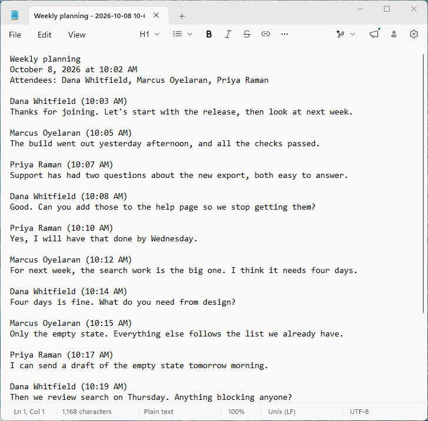

Simple Transcript
Copy it, or save it as plain text
The meeting, its date and attendees, then the conversation. A file that opens anywhere and pastes cleanly.
The meeting, its date and attendees, then the conversation. A file that opens anywhere and pastes cleanly.
